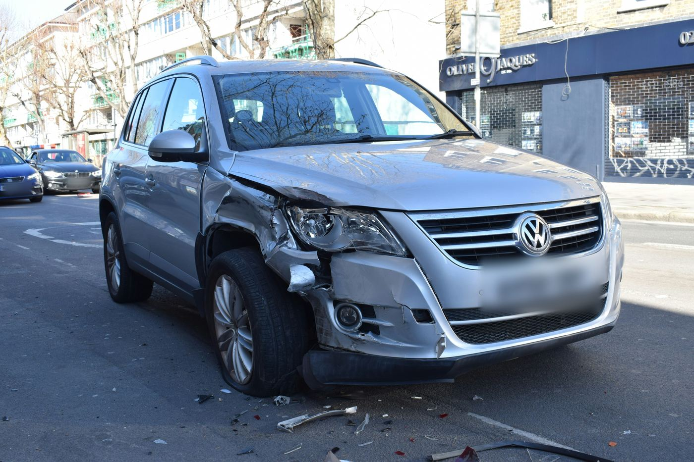

Om os

Vores erfaring – din styrke
Hos AutoBridge har vi mange års erfaring fra forsikringsbranchen med særligt fokus på autoskader og forsikringsskader. Vi kender forsikringsbranchen indefra og ved, hvordan en skadesag bevæger sig fra anmeldelse til afslutning – og ikke mindst, hvad der skal til for at sikre, at din sag bliver behandlet korrekt.
Vores faglige fundament er stærkt. Vi har gennemført FOAK-certificeringer med topkarakterer og har omfattende erfaring med både almindelige skadesager, komplekse klagesager og sager, der har været behandlet i Ankenævnet for Forsikring. Vi har desuden erfaring fra klageansvarlig enhed, hvor vi har arbejdet med at vurdere og behandle kunders indsigelser og sikre, at sager bliver vurderet på et korrekt og sagligt grundlag.
Vi kender forsikringsselskabernes arbejdsgange, procedurer og måde at behandle skadesager på. Det betyder, at vi ved, hvilke spørgsmål der skal stilles, hvilken dokumentation der er vigtig, og hvor man skal være ekstra opmærksom.
Vi kender reglerne – og vi tør udfordre afgørelsen
En forsikringsafgørelse er ikke nødvendigvis den endelige sandhed.
Hos AutoBridge har vi brugt utallige timer på at fordybe os i forsikringsbetingelser, tidligere domme og kendelser fra Ankenævnet for Forsikring. Det giver os en særlig forståelse for den praksis, som forsikringsselskaberne arbejder efter.
Vi nøjes derfor ikke med at acceptere et afslag eller en erstatningsopgørelse, blot fordi den kommer fra et forsikringsselskab. Vi undersøger grundlaget bag afgørelsen og holder det op imod forsikringsbetingelserne, gældende praksis og den konkrete situation.
Hvis vi vurderer, at sagen bør udfordres, tager vi kampen op – sagligt, professionelt og på kundens vegne.
Den rigtige dækning. Den rigtige erstatning. Den rigtige behandling.
Forsikringsbetingelser kan være omfattende og svære at gennemskue. Samtidig kan den måde, en skade bliver opgjort eller behandlet på, have stor betydning for det beløb, du ender med at få udbetalt.
Hos AutoBridge arbejder vi for, at du får den dækning og erstatning, du har krav på, og at din sag bliver behandlet på et korrekt og fair grundlag.
Vi har erfaringen. Vi kender branchen. Vi kender reglerne. Og vi ved, hvordan man får sin sag hørt.
AutoBridge – Vi styrer forsikringssagen. Du styrer din forretning.
Kontakt os